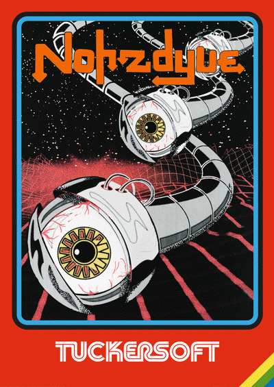
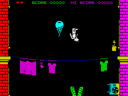

Nohzdyve


{kind=link}

| Created by: | Matthew Westcott, Clayton McDermott, Brian Reitzell |
| Price: | Free |
| Year: | 2018 |
Black Mirror: Bandersnatch, the interactive film set in the knobby-9-pin-joystick salad days of 1980s PC gaming, premiered on Netflix in 2018. The show’s creators are giving fans ways to extend the experience of the alternate timeline it describes. One of those is an honest-to-god video game coded for the ZX Spectrum.

The game is called Nohzdyve and is referenced in Black Mirror: Bandersnatch as one of the works of Tuckersoft, the games developer for whom the movie’s protagonist works.
Black Mirror: Bandersnatch takes place in a critical hour of video gaming history — following the collapse of the Atari VCS/Intellivision/ColecoVision console market and before the western launch of the Nintendo Entertainment System. Video gaming in this three-year span was largely supported by personal computers, and Brooker’s Bandersnatch seeks to capture that period of wide-open experimentation, when video gaming’s state-of-the-art works moved from a TV in the living room to a desk in the bedroom.